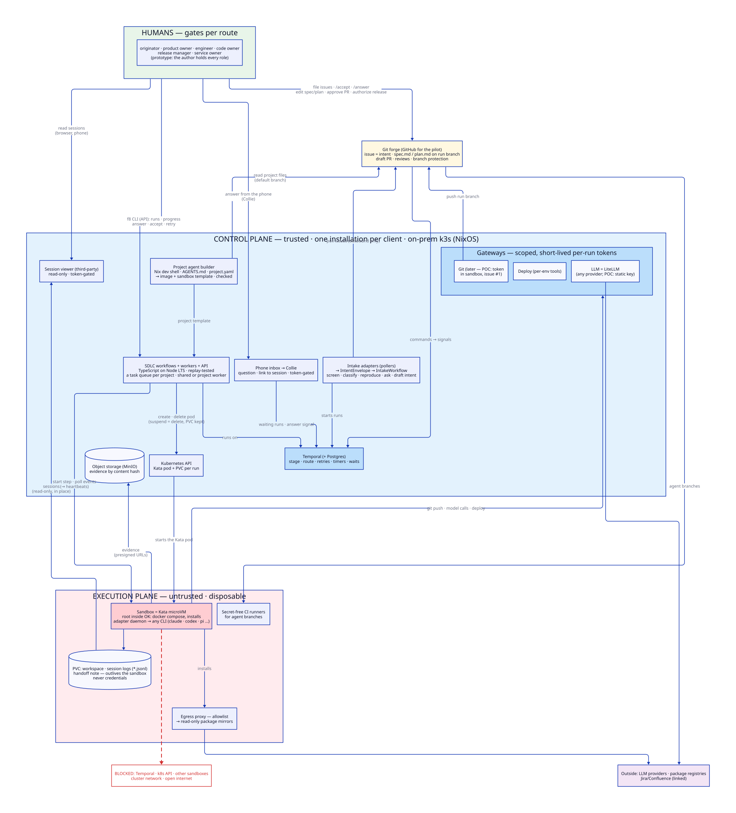
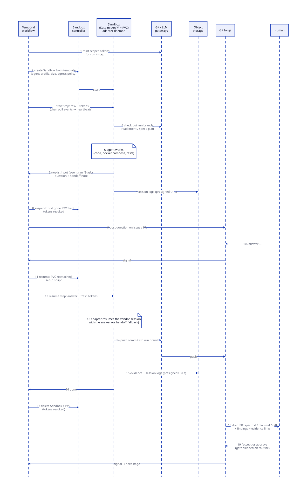

SDLC essentials · PRD at a glance · Architecture (draft) · PRD v0.6
Factory8 architecture
Agent-agnostic, one installation per client on on-prem k3s. Intents come in through intake, Temporal workflows written in TypeScript run the process, git holds the artifacts, disposable Kata microVMs run each repo's declared project agent, and gateways are the only door out. Humans work from the forge and the f8 CLI.
The big picture

Blue = trusted control plane · red = untrusted execution plane · dashed red = what the sandbox can never reach. Intake polls the forge, outbound only; no public endpoint. full size · source

One step, end to end (with a mid-step question)

The sandbox runs only while the agent works. A question suspends it: the pod is gone, the PVC (workspace, vendor session, handoff note) is kept, and tokens are revoked, so waiting costs no compute. Stage gates delete the sandbox instead, and the next stage starts fresh from git, possibly with another vendor. In the Phase 0 SDLC run (M5) every stage gets its own sandbox — pod and PVC —; the review stage may use the author's model, since isolation, not a different model, keeps it independent (DEP-11). The M6 ship run uses the same sandbox per step, adds a wait for a human answer that holds no pod, and takes its stage prompts from the factory8 plugin. full size · source

Who owns what
| Component | Owns | Never owns |
|---|---|---|
| Temporal (+ Postgres) | Stage, route, retries, timers, every human wait; passes references (repo@sha, object keys) | Artifact content; the only copy of a gate decision |
| SDLC workflows (TypeScript, Node LTS) | The process as code: stages, loops, child workflows; per-step config (agent profile, sandbox size, egress) | Hardcoded per-step settings; unversioned changes (replay tests gate every change) |
| Intake (adapters + IntakeWorkflow) | Polling sources, IntentEnvelope, trust tier, triage (screen, classify, reproduce, ask), draft intent | Starting a run without a human /accept |
| Git forge | Intent (issue), spec.md/plan.md on the run branch, code, PR reviews, gate decisions, branch protection | Evidence blobs |
| Object storage (MinIO) | Evidence by content hash: tool output, transcripts, screenshots; linked from the PR | Anything committed to the repo |
| Gateways (git, LLM, deploy) | All agent access to the forge, models and environments; scoped per run, short-lived. LLM = LiteLLM (per-step virtual keys are the target). POC: no git gateway yet; sandboxes get a GitHub token and a static LiteLLM key from a Secret (#1) | — |
Project agent (repo's Nix dev shell + AGENTS.md + .factory8/project.yaml) + builder | What an agent needs for this repo: environment image (via an environment provider; Nix first, Dev Containers before client installs) and sandbox template (the pod spec), context, commands, tools (skills, MCP servers, CLIs), default profiles; built and checked from the default branch only, build secrets kept out of image layers | Runtime class, network policy, resource ceilings, approved egress and secrets (admin-owned); builds from run branches |
f8 CLI | The human interface besides the forge: runs, live step progress, pending gates and questions, answer/accept/retry/cancel, evidence, project agent checks | Anything the control-plane API doesn't also expose (a web UI can come later on the same API) |
| Session viewer (third-party) + phone inbox | Reading every step's session from the run volumes in place, read-only, behind a token (PLT-9); bringing a waiting run's question to the engineer's phone through Collie, with a link to its session, and returning the reply as the run's answer signal (PLT-10) | Starting, resuming or messaging an agent; credentials; being the only way to answer (f8 answer and the forge stay) |
| Sandbox (Kata microVM) + PVC | The adapter daemon (polled by workers) running the agent CLI as root with its permission checks off, docker compose, installs; workspace, handoff note and the agent's session logs (*.jsonl), kept after the run until retention removes them | Credentials, cluster access, open internet, any path to Temporal (hooks stay inside the adapter) |
Rules the architecture enforces
spec.md/plan.md directly; /accept or approval becomes a Temporal signal. Author ≠ approver.routine/novel/high-risk; a human confirms. Any step may escalate; only a human de-escalates.Platform base
Phase 0 spikes
| # | Prove that… |
|---|---|
| 1 | Workers start Kata pods from a per-project sandbox template (pilot repo image built from its Nix dev shell, dependencies preinstalled, A14) on the existing cluster, with default-deny NetworkPolicy and an egress proxy |
| 2 | Suspend works under Kata: pod deleted, PVC kept, a new pod reattaches it at the same paths on resume (A8) |
| 3 | Claude Code runs headless behind the adapter contract, talks to a custom LLM provider through the gateway (A13), heartbeats its progress through the adapter daemon, asks questions through f8-ask, which the adapter reports as needs_input (headless Claude Code has no AskUserQuestion, A15), resumes the session after the answer, with the handoff note as fallback (A9), and its session logs land in object storage (AGT-11) |
| 4 | A TypeScript Temporal workflow runs 3 steps, retries a failed step, waits on a human signal and passes a replay test |
| 5 | The git gateway limits a run token to its run branch, and a forge command (/answer, /accept) reaches Temporal as a signal |